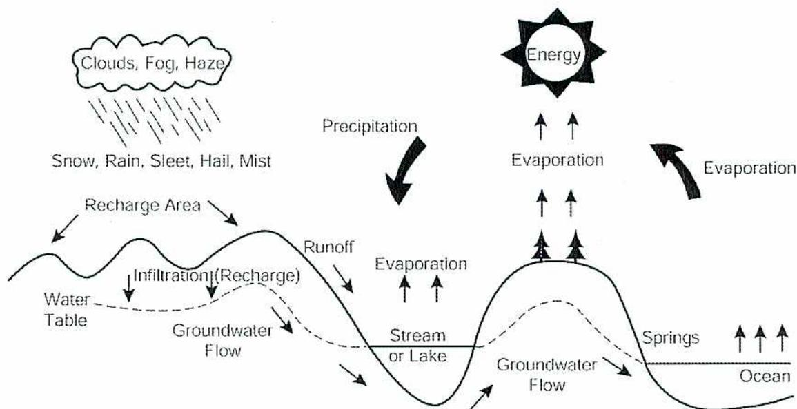
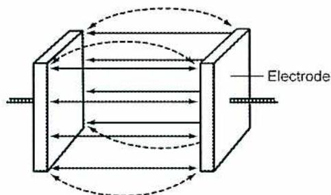
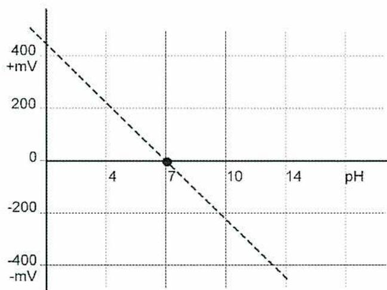
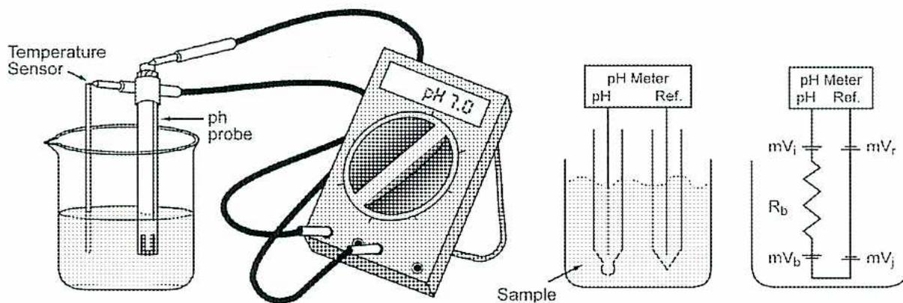

When you complete this learning material, you will be able to:
Discuss the significance of common water impurities and the application of water analyses.
You will specifically be able to complete the following tasks:
Describe the sources of the impurities found in raw water.
Supplies of fresh water are necessary for use in all industries. Uses of water include boiler feedwater, cooling water, potable water and sanitary water. Industry is also a part of the global water cycle. The global water cycle is shown in Fig. 1. Industries must locate near a suitable water supply, often a river or lake. Groundwater can also be used if the supply is large enough. Ocean water is often used for cooling water, but has too many dissolved solids to be used for most industrial applications.

The diagram illustrates the global water cycle. At the top, a sun labeled 'Energy' has arrows pointing upwards from the ocean and land towards 'Clouds, Fog, Haze'. These arrows are labeled 'Evaporation'. From the clouds, a large downward arrow labeled 'Precipitation' points to the ground, with smaller labels 'Snow, Rain, Sleet, Hail, Mist'. The land is shown as a series of hills. On the left, arrows point from the ground into the earth labeled 'Infiltration (Recharge)', leading to a dashed line labeled 'Water Table'. Below this, arrows point horizontally labeled 'Groundwater Flow'. On the right side of the hills, an arrow labeled 'Runoff' points into a 'Stream or Lake'. From the stream or lake, an arrow labeled 'Evaporation' points upwards. Further right, the land meets the 'Ocean'. Arrows labeled 'Springs' point from the land into the ocean, and another set of arrows labeled 'Evaporation' points from the ocean into the air.
Figure 1
Global Water Cycle
Water is evaporated from the earth's surface by the heat of the sun. As the water rises into the upper atmosphere, the temperature drops causing the water to condense. The water and the clouds are transported over large distances by the air movements in the atmosphere. The water falls back to earth as precipitation. As the water falls to the ground, it absorbs gases from the environment. If the air contains acid causing gases, such as sulphur dioxide, acid rain is the result.
| Hardness | Calcium and Magnesium expressed as \( \text{CaCO}_3 \) | Chief Source of scale in heat exchangers and boilers | Softening, Demineralization. Internal boiler treatment. |
| Free Mineral Acid (FMA) | \( \text{H}_2\text{SO}_4 \) , \( \text{HCl} \) , etc., expressed as \( \text{CaCO}_3 \) | Corrosion | Neutralization with alkalis. |
| Carbon Dioxide | \( \text{CO}_2 \) | Corrosion in water, steam and condensate lines | Aeration, Deaeration, Neutralization with alkalis. |
| pH |
Hydrogen Ion Concentration defined as:
$$ \text{pH} = \log \frac{1}{(\text{H}^+)} $$ |
pH varies as acids or alkalis in water. Most natural waters have a pH of 6 – 8. | pH can be increased by alkalis or decreased by acids. |
| Alkalinity |
Bicarbonate (
\(
\text{HCO}_3
\)
)
Carbonate ( \( \text{CO}_3 \) ), and Hydroxide ( \( \text{OH} \) ), expressed as \( \text{CaCO}_3 \) |
Foaming and carryover. Embrittlement of boiler steel. \( \text{HCO}_3 \) and \( \text{CO}_3 \) produce \( \text{CO}_2 \) in steam causing condensate line corrosion. | Lime and lime soda softening. Acid treatment. Hydrogen zeolite softening. Demineralization by ion exchange. |
| Chloride | \( \text{Cl}^- \) |
Adds to solids.
Adds to corrosive character of water. |
Demineralization, reverse osmosis, electrodialysis, or evaporation |
| Dissolved solids | None |
Total dissolved matter.
High concentrations cause process interference. |
Lime softening and cation exchange by hydrogen zeolite.
Demineralization. |
| Suspended solids | None |
Measurement of undissolved matter.
Deposits in heat exchangers and boilers |
Subsidence. Filtration after coagulation and settling. |
| Total solids | None | Sum of dissolved and suspended solids. | As per dissolved and suspended solids. |
The sources of surface water include rain, melting snow, and glaciers. The water finds its way into streams and rivers. The contamination that the water picks up depends upon the course of the river or stream. If the river is lined with rocks, the water slowly dissolves the rocks. The dissolved minerals are mostly in the form of hardness such as calcium and magnesium. The water may also pick up sand and soil particles. They usually remain as suspended solids. The water is aerated as it splashes over the rocks in the riverbed. Aeration saturates the water with oxygen. The combination of sunlight, organic material and inorganic nutrients causes a range of life forms to grow in the water. Some of these are: algae, fungi, bacteria, and fish.
The water often picks up grasses, along with debris from trees along the riverbed. Some of this material dissolves in the river water. These organics can cause problems in water treatment systems, especially demineralizers.
The surface water quality can vary widely over a period of one year. Slower flows in winter causes clear water with higher hardness levels. Water has more time to dissolve the rocks of the riverbed. There is little silt and organics to affect the clarity levels. Periods of high flow such as spring runoff or runoff from storms can make the river much more turbid as it carries more silt. The water contains more suspended solids, but it may also have a lower hardness reading.
The water may have come in contact with copper bearing minerals, or runoff from copper production. Copper in plant water systems may be a product of corrosion of copper or copper alloy pipe from fittings inside the plant piping. The copper may be added deliberately to water supply reservoirs for algae control. It is undesirable in plant waters because it is corrosive to aluminum.
Water becomes contaminated with lead from metallurgical wastes or from lead containing poisons such as arsenic. Concentrations of lead must be kept below 0.05 mg/l in drinking water. It must be removed from wastewaters being discharged. Because lead remains suspended rather than dissolving in water, it is most easily removed by filtration. Lead is classed as a heavy metal and causes serious health problems in animals. Heavy metal refers to any metallic chemical element that has a relatively high density and is toxic or poisonous at low concentrations. Examples of heavy metals and metalloids include mercury (Hg), cadmium (Cd), arsenic (As), chromium (Cr), thallium (Tl), and lead (Pb).
Phosphate compounds are widely used in fertilizers and detergents. Silt from agricultural runoff and municipal wastewaters contain phosphate compounds. Phosphate compounds can be precipitated at a pH over 10.0 with alum, sodium aluminate, or ferric chloride. Phosphates increase algae growths in cooling water systems, which requires more chemical use to control the microbiological activity.
Zinc is present in water because of discharges from mining or metallurgical operations. It also appears because of corrosion of galvanized steel piping. Zinc is removed by lime softening or by cation exchange.
Chromium finds its way into water supplies from industrial processes such as chrome plating operations. It can be reduced by filtration and removed by anion exchange. Chromium contamination from cooling tower blowdown has largely been eliminated by restrictions on chromate use as a cooling system corrosion inhibitor. Chromate is now only used in closed recirculating systems.
Mercury is produced in water by wastes from caustic production. It is also a heavy metal and leaches out (is carried out by water) of coal ashes. It is restricted to very low levels in potable water supplies (below 0.002 mg/l). It is often removed by reduction and filtration.
Describe the effect of the listed water impurities on power plant equipment and processes.
As previously stated, suspended solids are not completely dissolved or soluble in water. They give the water a turbid appearance. Examples are sand particles or the debris from vegetation. The silt present in river water is an example of a suspended solid.
Suspended solids must be removed in the pretreatment section of the plant. This is accomplished by coagulation and sedimentation followed by filtration. If low levels of suspended solids are present, as with groundwater, the pretreatment section of the plant may be very small. It may only have one level of filtration. Very turbid river water may require a settling pond before the water is introduced to the pretreatment section of the plant. The pretreatment section of the plant has a clarifier and filtration section. The water must be free of suspended solids before it is further purified in the demineralization section of the plant.
Suspended solids are not acceptable in boiler water. They can lead to deposits on the heating surfaces, which lead to corrosion of the metal surfaces. In cooling water systems, a small amount of suspended solids are usually present. They come from the makeup water or originate from dust in the air flowing through the cooling tower. The solids cause sludge to accumulate in the cooling tower basin. The solids also deposit in the heat exchangers in the plant causing increased corrosion rates. Suspended solids in cooling tower systems are reduced by side stream filtration of the cooling tower water.
Completely dissolved substances are present as molecule-sized ions. They often do not add colour to the water. Ions that cause hardness in the water are calcium and magnesium ions. They are removed in acid cation units and in sodium zeolite softeners. They are not soluble even at low pressures and will form scale in the boiler. The acid cation units remove sodium ions as well. Sodium ions must be removed for boiler water treatment programs above 4000 kPa. Above 4000 kPa the sodium will come out of solution and form scales. The anions that were joined with the calcium, magnesium and sodium ions are removed in the demineralizer's anion unit.
The boiler water treatment programme must handle any dissolved solids that were not removed in the water treatment section. There will always be trace amounts of suspended solids entering the boiler.
Organics that are in colloidal form are removed with coagulation and filtration. Organic matter is often removed by filter beds of activated carbon that removes the colour and odour of the water.
Oxidizing chemicals such as chlorine dioxide and ozone have proven effective in destroying organics and may be used in lieu of activated carbon filters. Chlorine destroys organics, but chlorine also reacts with organics to form halogenated compounds. Because many halogenated organics are suspected carcinogens, chlorine is not recommended for organic destruction in all applications. However, it is still an effective biocide, although the carcinogen issue has caused some to discontinue its use and switch to other biocides. The combination of ultraviolet light and ozone is becoming more popular for organic destruction, especially in low-volume streams.
Hydrocarbons are not commonly present in groundwater or river water. They may be present as a result of environmental incidents or accidental spills. Some plants recycle wastewaters such as surface runoff, often containing hydrocarbons. The water being recycled requires a knockout or filter arrangement to skim off any accumulated oil.
Some hydrocarbons may enter the pretreatment section. The clarification and filtration processes remove small amounts of hydrocarbons. The hydrocarbons may foul the filter media in time. This is preferable to having the hydrocarbons foul the demineralizer resins or RO (reverse osmosis) membranes.
Trace amounts of metals in the makeup water to a plant are not normally a problem. A careful analysis of the makeup water is done before the treatment system is specified. Unusually high levels of metals are taken into consideration when the water treatment facilities are designed. The pretreatment step is used to remove normal trace amounts of metals. Clarification and filtration steps are often adequate to protect the demineralizer resins.
Metals in the cooling tower system may be of concern as the tower water concentrations increase due to partial evaporation of the water. A tower may have 10-15 cycles of concentration. This means that the water in the cooling water circuit is 10-15 times higher in metals than the makeup water. Enough dispersant has to be added to keep the metal in solution until it can be removed via the cooling tower blowdown. If the metal comes out of solution, it forms deposits on heat exchanger surfaces. The deposits provide a site for underdeposit corrosion.
Explain the significance and importance of standard methods of water analysis.
When preparing industrial water, chemical analyses are necessary to track the treatment processes. All water treatment areas require some testing. Makeup water, pretreatment plant, demineralizer plant, cooling water, and effluent waters are all areas of plants that require testing. Standard testing methods of carrying out the testing are necessary. Each person must do the tests in the same manner. The tests are verified by sending samples out to off-site labs. The analytical methods used in a plant setting are suitable for on-site analysis. On-site analytical methods may vary from methods used in larger lab settings.
Companies that supply water treatment chemicals and consulting often supply the analytical methods and testing supplies to their clients. They also supply testing equipment and reagents. Testing procedures come from several sources, including: “The Annual Book of ASTM Standards” and “The AWWA Standard Methods for the Examination of Water and Wastewater.” (AWWA is the American Water Works Association).
It is very important that the water analysis produced by the plant personnel is accurate and reliable. Variations in water analyses cannot be mistaken for changes that are occurring in the water treatment plant or in the boiler chemistry. Changes to the boiler chemistry are usually based on the water analysis readings.
There are a number of methods of expressing water analyses. For example, the quantity of calcium present in a given sample can be expressed in several ways. It can be expressed either directly as the mass of pure calcium or indirectly as the equivalent mass of different calcium compounds. For consistent understanding and application of analysis results, it is important that a standard be followed for the presentation of the data.
Water analyses are usually stated in milligrams per litre (mg/l) or parts per million (ppm). The relationship between the two is: ppm × solution density = mg/l . If the solution's relative density is equal to or extremely close to one, then ppm = mg/l . This is usually the case for weak aqueous solutions found in industrial water treatment. For practical purposes these units are the same.
observed, and the quantity of the reagent used to produce it is recorded. A calculation is made to determine the quantity of the constituent measured. A reagent serves to quantify the concentration of the constituent being measured. The quality and strength of the reagent must conform exactly to specifications.
Most reagents are solutions of acids or alkalis. Specifications for solution strength have been established. For example, N/50 sulphuric acid is used as a reagent in alkalinity tests. The prefix N/50 represents the solution strength of the sulphuric acid. This particular strength is chosen because one ml of this reagent dissolves 10 ppm of \( \text{CaCO}_3 \) . A change in strength changes the quantity that is dissolved. Standards are established for the quality and strength of each reagent.
Standardization is critical for accurate testing. Reagents are obtained from firms specializing in their manufacture. Time has an adverse effect on the strength of some reagents. Hence excessive quantities should not be stocked. The maximum stock is often limited to a six months' supply.
An indicator is a solution that exhibits a change in its colour when a very small quantity is dissolved in a sample of water whose acidity or alkalinity is within a specific range. A number of indicators are available and each changes its colour over a different acidity (or alkalinity) range. All of them are organic compounds with complex chemical formulae and are themselves weak acids or alkalis. When added to other solutions, they do not undergo chemical reactions with any of the constituents of the solution beyond being ionized. The colour change is the special characteristic caused by such ionization.
Indicators are used in test kits. Appropriate colour changes can be produced. Titration of the sample with the reagents can be stopped when the colour change is observed. The principal indicators employed in the different tests are: phenolphthalein, methylorange solution, starch solution, and a set of pH indicator solutions
Titration is a procedure where a standard solution or reagent from a calibrated container is slowly added to the water sample. The color of the sample is watched as the reagent is added to the sample. When a visual change occurs in the sample color, addition of the solution is stopped. The point at which the color change occurs is termed the end point . The amount of the standard solution used is proportional to the amount of the impurity present in the sample.
Analyses have little meaning if the samples are not representative. To study the effect of an addition of treatment chemicals in a boiler, the sample is not taken from the boiler immediately after the addition of the chemicals. Time must be allowed for the change to become effective. The samples are run through sample coolers and contained in
Describe which analyses are appropriate at given sampling points including the significance of the sampling point locations.
Water samples are collected from water treatment and boiler systems to assure the system is functioning as required. Normally, a sample is taken upstream and downstream of each step in the water treatment or boiler process. In this way the water quality is tracked from the source and through the systems. The sample should be representative of the stream from which it is taken. Sample lines (small bore tubing) are flushed before the sample is taken, and all sampling procedures are well defined. The sampling locations are well defined and marked. For most tests, the samples should be cooled to room temperature prior to testing. Filtering may also be required.
As an example, the sampling locations through a water treatment plant and are listed below. The sampling points on the list include river water makeup, a cold lime clarification and filtration process, and a demineralizer plant. The sample points are numbered for reference to the flow diagram as shown in Fig 2. Location of on-line analyzers is also noted. The analyzers are used to alert the operators to changes and to control the chemical feed systems.
![A detailed schematic diagram of a water treatment and boiler water circuit. The process begins with 'RAW WATER' (1) entering a 'CLARIFIER'. The output (2) goes to a 'COLD LIME SOFTENER', which then feeds into 'GRAVITY FILTERS' (3). The filtered water (4) is stored in a 'FILTERED WATER TANK' and then pumped into a 'CATION' exchange tank. The output (5) goes to a 'DEGASIFIER' equipped with an 'AIR BLOWER'. The water (6) then passes through 'ANION' and 'MIXED BED POLISHER' tanks (7). The polished water (8) is pumped by 'BFW PUMPS' into a 'DEAEATOR' which has a 'VENT' and 'STEAM' input. The deaerated water (9) is pumped into a 'BOILER' (12). Steam from the boiler (10) goes to a 'TURB' (turbine) connected to a 'GEN' (generator). Exhaust from the turbine (11) goes to a 'SURFACE CONDENSER' cooled by 'COOLING WATER'. The condensed water (12) collects in a 'HOT WELL' and is pumped by an 'EXTRACTION PUMP' through 'LP HEATERS' (13) and a 'COND POLISHER' (14) before returning to the 'DEAEATOR'. A 'DUMIN WATER TANK' (15) is also connected to the 'BFW PUMPS'.](cfef993dcc8fb513de79eb1f93cf26ae_img.jpg)
Figure 2
Water Treatment/Boiler Water Sample Points
An example of a boiler and turbine water circuit and its sampling points is also outlined in Fig. 2. This boiler turbine circuit uses demineralized water produced by the water treatment system for makeup. The deaerator is fed amines to control the pH of the
Steam purity samples are not checked on a daily or weekly basis. This test is usually done on a biannual or annual basis unless problems are suspected. The steam purity sample is used to check the quality of the steam. The steam purity is affected by carryover of water from the steam drum. The sample point is either built into the steam drum and takes steam off the steam separating equipment, or a sampling arrangement is installed on the main steam pipe between the boiler and the superheater.
Interpret the results of a comprehensive standardized water analysis including the relationship of the various parameters.
Water treatment companies and water analysis laboratories use standard water analysis forms. When an analysis is completed, the pertinent sections of the analysis form are filled out. An example of a standard analysis form is shown in Table 2. It shows analysis of various rivers and lakes. The cations are listed first followed by the total of cations. Next the anions are listed followed by the total of anions. Because the cations and anions balance, the total cations and total anions are the same.
Next the alkalinity is listed, in this case as M alkalinity, and P alkalinity. Closely related is the carbon dioxide content. The pH is also listed. The pH value is normally close to 7, but as the readings illustrate, there is quite a variation.
Table 2 is a standardized water analysis form. The four waters that were analyzed are:
As shown on the analysis form, all results are stated as \( \text{CaCO}_3 \) unless otherwise noted. Turbidity, for example, is stated in Nephelometric Turbidity Units. NTU is a standard for measuring the clarity of the water. Other standards for turbidity measurement include Formazin Turbidity Units (FTU), Jackson Turbidity Units (JTU), and particulate count or concentration. The water with the most suspended solids is from a large flowing river where the bottom is not lined with rocks. Analysis C, the Mississippi river, has higher colour, silica, and turbidity levels because it has a sandy riverbed. The mountain river in Montana, analysis D, has lower colour, silica, and turbidity levels because it has a rocky riverbed. The river waters are quite similar, but the Mississippi is further from its source so it has more dissolved material.
The lake waters are quite different. The Great Lakes water has more hardness and has more suspended solids. The categories of cation, anion, turbidity, and TDS are higher in the Great Lakes water. The mountain lake is fed primarily from glaciers. It has much lower levels of dissolved solids and suspended solids. The lake water is clear with a turbidity of 7 and little colour.
The only difference between stream B and stream C is that the \( \text{CO}_2 \) is reduced from 29 to 5.
Table 3
Standard Water Analysis - Demineralizers
| WATER ANALYSIS REPORT | ||||||
|---|---|---|---|---|---|---|
| Constituent | Analysis in ppm as | A | B | C | D | |
| Calcium ( \( \text{Ca}^{2+} \) ) | \( \text{CaCO}_3 \) | 43 | 0 | 0 | 0 | |
| Magnesium ( \( \text{Mg}^{2+} \) ) | \( \text{CaCO}_3 \) | 12 | 0 | 0 | 0 | |
| Sodium to Balance ( \( \text{Na}^{2+} \) ) | \( \text{CaCO}_3 \) | 28 | 0.2 | 0.2 | 0.2 | |
| Hydrogen - FMA ( \( \text{H}^+ \) ) | \( \text{CaCO}_3 \) | 56.8 | 56.8 | |||
| Potassium ( \( \text{K}^+ \) ) | \( \text{CaCO}_3 \) | |||||
| TOTAL CATIONS | \( \text{CaCO}_3 \) | 83 | 57 | 57 | 0.2 | |
| Bicarbonate ( \( \text{HCO}_3^- \) ) | \( \text{CaCO}_3 \) | 26 | 0 | 0 | 0 | |
| Carbonate ( \( \text{CO}_3^{2-} \) ) | \( \text{CaCO}_3 \) | |||||
| Hydroxide ( \( \text{OH}^- \) ) | \( \text{CaCO}_3 \) | 0.2 | ||||
| Sulfate ( \( \text{SO}_4^{2-} \) ) | \( \text{CaCO}_3 \) | 41 | 41 | 41 | 0 | |
| Chloride ( \( \text{Cl}^- \) ) | \( \text{CaCO}_3 \) | 15 | 15 | 15 | 0 | |
| Nitrate ( \( \text{NO}_3^- \) ) | \( \text{CaCO}_3 \) | 1 | 1 | 1 | 0 | |
| Phosphate ( \( \text{PO}_4^{2-} \) ) | \( \text{CaCO}_3 \) | |||||
| TOTAL ANIONS | \( \text{CaCO}_3 \) | 83 | 57 | 57 | 0.2 | |
| Carbon Dioxide Free ( \( \text{CO}_2 \) ) | \( \text{CaCO}_3 \) | 3 | 29 | 5 | 0 | |
| Silica ( \( \text{SiO}_2 \) ) | \( \text{CaCO}_3 \) | 7 | 7 | 7 | 0.2 | |
| EXCHANGABLE ANIONS | \( \text{CaCO}_3 \) | 93 | 93 | 69 | 0.4 | |
Explain the purposes and principles of testing instruments, including embrittlement detector, total solids meter, and pH meter.
In industrial water treatment, accurate chemical analyses are necessary to control the water treatment process. Many of the same instruments are used to give quick readings for the pretreatment, demineralization, and boiler water sections of the plant. A complete analysis of the water is not required for day-to-day operations. Many quick and accurate tests with instruments can guide the water treatment and boiler operators. The most common tests are pH, conductivity, hardness, silica, and phosphate tests. The pH, conductivity, and silica tests are done with simple electronic instruments. The hardness test is done by titration using common reagent chemicals.
Caustic embrittlement is a corrosion process that is described in Module 2-3-09, Internal Water Treatment. An embrittlement detector, as shown in Fig. 3, is a device used to test boiler water for embrittlement tendencies. The detector is installed in the continuous blowdown line of a boiler. The boiler water is kept at boiler temperature as it circulates through the detector.
The detector has a metal test specimen (the same metal as the boiler is constructed of) that is subjected to boiler water. The specimen is bolted in place and clamped to put it under stress. Adjustment of the adjusting screw allows water to leak out very slowly under the specimen. The escaping water and steam leaves a concentrated solution in contact with the stressed surface of the metal specimen. The specimen cracks if the water has embrittlement tendencies. The specimen is checked at monthly intervals for signs of cracking.
The conductivity test is an accurate test for the dissolved solids in boiler water. It is accurate enough to determine steam purity (conductivity of the condensate) as well.
The conductivity test is not specific to any one ion. It is a measure of the total ion concentration. A basic conductivity cell is shown in Fig. 4.

Figure 4
Basic Conductivity Cell
Referring to Fig. 4, a voltage is applied to each of the drive electrodes of the conductivity cell. One side is positive and the other is negative. The sense electrodes detect the flow of current through the solution.
Conductivity meters are lab instruments that have a probe that is inserted into the sample. The probe of a conductivity meter is connected to an electronic instrument. The meter has an output needle or digital output to read the conductivity of the sample. The meter may be calibrated to read directly in TDS. The meter may have a probe with two electrodes for high purity waters and a four-electrode probe for more concentrated solutions.
The four-electrode model in Fig. 5 has two drive electrodes and two sensing electrodes. The current is applied to the two drive electrodes and the sensing electrodes measure the current flow through the solution.
A similar setup is used for an on-line conductivity meter. In this type a small flow of water is passed through the cell. The meter output is connected to the control room. The signal can be used to control such variables as boiler blowdown or chemical feeds.

| pH | mV |
|---|---|
| 4 | ~200 |
| 7 | 0 |
| 10 | ~-200 |
| 14 | ~-400 |
Figure 6
Electrode Values of pH and millivolts
One or two electrodes are supplied with the meter. One electrode is used for reference and develops a constant voltage. The constant voltage is compared to the changing voltage of the second electrode. The voltage of second electrode changes as the pH changes. The pH electrode is usually contained within a glass tube. In some units, especially the portable type, two electrodes are mounted in a single unit. This is called a combined or combination electrode.

Figure 7
pH Meter Operation
Explain the purpose of steam purity measurement and process of steam sampling.
Steam purity refers to the amount of contamination in the steam. The contamination is liquid, solid, or vaporous contamination of the steam. Steam purity is reported as the solids content.
Note: steam purity should not be confused with steam quality. Steam quality refers to the amount of moisture in the steam.
Carryover is any solid, liquid, or vaporous contaminant that leaves a boiler along with the steam. The most common cause of steam contamination is entrainment of boiler water with the steam. The boiler water may contain dissolved solids and suspended solids.
When boiler water is carried over with the steam from a boiler drum, the steam is contaminated with solid material or particles. When water is carried over it contains the dissolved solids that were present in the boiler water. Water droplets are vaporized in the superheater. The dissolved solids remain as particles in the steam. The carryover causes deposits in the superheater piping or on the turbine nozzles and blading.
Steam turbines are susceptible to deposition and impingement damage as a result of impure steam. When the steam is used for steam turbines or process steam, a steam purity of 0.03 mg/L of total dissolved solids is necessary to prevent deposits. This is a standard limit for industrial applications for boiler pressures of 2000 kPa to 10 200 kPa. Operation below the limit ensures reliable service from the superheaters and turbines downstream of the carryover.
Boiler manufacturers often provide a steam purity guarantee of 1.0 mg/L. In practice, steam purity levels of 0.01 mg/l are often achieved. An accurate method of measuring steam purity is necessary for the successful operation of plants where limits on steam purity are especially low.
A steam sample is condensed for analysis. This is more difficult than it may seem because the steam sample must be a representative sample. The steam sample is taken with an isokinetic sampling arrangement. The nozzles used for the sampling are specially designed for each size of piping. They take a representative sample across the diameter of the pipe. Turns and other irregularities of the steam piping influence the
cooler. The interconnecting piping or tubing is made of stainless steel to avoid adding iron to the sample.
Steam purity is normally measured by the conductivity or sodium content of the sample. Conductivity is used on lower pressure boilers. The conductivity is affected by amines in the steam, which are used to control the pH in the condensate system. Sodium content is more applicable to ultrapure water from high pressure (over 10 000 kPa) boilers. The salts dissolved in the boiler water are in the sodium form. The presence of sodium in the steam is a direct indication of boiler carryover. The sample may be taken to the lab for analysis, or an on-line sodium analyzer can be used to track steam purity.
In drum-type boilers, incomplete separation of steam from the steam and water mixture in the boiler causes carryover. Many factors, both mechanical and chemical, contribute to the lack of separation.
Mechanical factors influencing carryover include the following:
Operating with high steam drum levels
Chemical factors influencing carryover include the following:
Operating the boiler well below design pressure also causes carryover. The steam flow passages in a boiler are designed for a specific volumetric flow rate. Reducing the operating pressure causes lower density with more voluminous steam. This causes a velocity increase. The increased velocity increases the amount of entrained water in the steam.
Carryover can never be eliminated completely. The best boiler designs with controlled water chemistry still produce trace amounts of carryover. When excessive boiler water concentrations cause carryover, increasing the continuous blowdown rate is a simple solution to the problem. If there are high levels of impurities entering the boiler with the makeup water, changes or upgrades are made in the water treatment section of the plant.
To prevent carryover it is necessary to find the root cause of the problem. An on-line analyzer is a valuable tool for finding the root cause. The output of the analyzer is graphed and compared to other variables such as drum level or changes in water chemistry. The carryover may not occur during steady operation, but only during upsets. Carryover can be detected with an on-line analyzer. Often the water treatment chemical supplier and consultant to a plant (such as Betz or Nalco) can supply an analyzer for the test.
A3.6